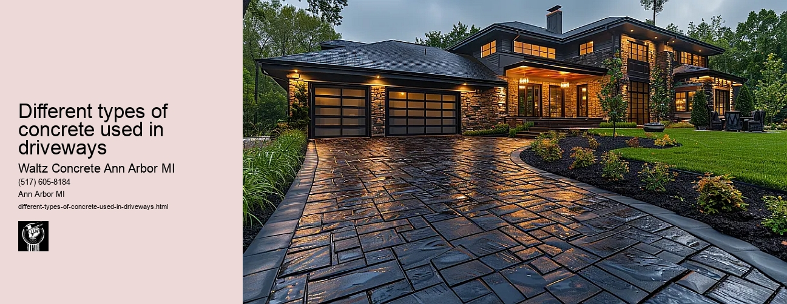

News
Concrete Driveway Installation Ann Arbor Mi
Concrete Driveway Installation Ann Arbor Mi
Choosing the right contractor for installation
Cost of concrete driveway installation in Ann Arbor
Permit requirements for driveway installation in Ann Arbor
The process and timeline of concrete driveway installation
Different types of concrete used in driveways
Maintenance and Repair of Concrete Driveways in Ann Arbor Mi
Maintenance and Repair of Concrete Driveways in Ann Arbor Mi
Preventive maintenance tips for durability
Common causes for concrete driveway damage
Professional companies offering repair services in Ann Arbor
Doityourself versus professional repairs
Costs associated with repairing a concrete driveway
Designs and Styles of Concrete Driveways in Ann Arbor Mi
Designs and Styles of Concrete Driveways in Ann Arbor Mi
Popular design trends for driveways
Considering climate factors when choosing a design or style
Unique customizations available for concrete driveways
Influence of home architecture on driveway design
Stamped stained and decorative options
Environmental Impact of Concrete Driveways in Ann Arbor Mi
Environmental Impact of Concrete Driveways in Ann Arbor Mi
Carbon footprint associated with concrete production
Use of sustainable materials in concrete driveways
Drainage considerations to reduce environmental impact
Local regulations regarding environmentally friendly driveways
Potential use of permeable or porous pavement
Alternatives to Concrete Driveways in Ann Arbor Mi
Alternatives to Concrete Driveways in Ann Arbor Mi
Asphalt driveways and their proscons
Paver stone driveways and their benefitsdrawbacks
Gravel or crushed stone as an alternative option
Comparing costs between different driveway materials
Resinbound surfaces as emerging technology
About Us
Contact Us

Different types of concrete used in driveways
Different types of concrete used in driveways
Title: Different Types of Concrete Used in Driveways
When choosing the right material for your driveway, concrete invariably emerges as a top choice due to its durability, aesthetic versatility and maintenance ease. There are several types of concrete available, each with its unique characteristics that lend themselves well to certain applications and aesthetics. This essay will delve into some of the most popular types of concrete used in driveways.
Firstly, we have plain or traditional concrete, which is the most commonly used type for driveways. Plain concrete is durable, sturdy and can withstand varying weather conditions without significant damage. It offers a straightforward finish and is often regarded as a cost-effective option for homeowners looking for longevity without much consideration for decorative aspects.
Secondly, there is colored or stamped concrete. Colored concrete introduces various pigments into the mix before it's poured to achieve many different shades and hues. The color choices range from earth tones like brown and terracotta to more vibrant colors such as blue or red. Stamped concrete replicates other materials such as brick, stone or wood by 'stamping' patterns into freshly poured concrete. This gives homeowners an opportunity to customize their driveways look while still enjoying the benefits of a durable surface.
Another type widely used is exposed aggregate concrete; this involves exposing the aggregate within the cement paste creating a visually appealing texture on your driveway's surface - perfect for adding an extra touch of elegance to any property. Exposed aggregate also has practical benefits; it provides excellent traction even when wet making it good option where slip-resistance is important.
Concrete pavers are another exciting option worth considering too. They come in numerous shapes, sizes, styles and colors providing endless possibilities for customization allowing you to create unique patterns or designs on your driveway.
Lastly but certainly not least is pervious (or porous) concrete which allows water to pass through it reducing runoff and promoting recharging groundwater levels an eco-friendly choice especially in areas prone to heavy rains.
Each type of concrete has its own unique set of advantages and disadvantages. For instance, while plain concrete may be the most affordable, it's also more susceptible to cracking. Colored or stamped concrete, on the other hand, can mimic the look of pricier materials but require more maintenance to keep their vibrant colors and patterns intact. Exposed aggregate offers a pleasing aesthetic and slip resistance but might be rougher underfoot than other options.
When choosing the type of concrete for your driveway, there are many factors that need to be taken into account such as durability needs, climate conditions, aesthetic preferences and budget constraints. It is recommended you consult with a professional contractor before making your decision; they will assess your specific situation and suggest the best option accordingly.
In conclusion, concrete continues to be a top choice for driveways due to its versatility in both aesthetics and functionality. Whether you're looking for simplicity with plain concrete or aiming for design appeal with stamped or colored options, there's sure to be a type of concrete that perfectly fits your needs.
The process and timeline of concrete driveway installation
Different types of concrete used in driveways
Frequently Asked Questions
What are the different types of concrete used in driveways?
The different types of concrete used in driveways include regular or traditional concrete, stamped concrete, exposed aggregate concrete, and colored or stained concrete. Each type has its own advantages and can be chosen based on personal preferences and budget.
How does climate affect the choice of concrete for driveways in Ann Arbor Mi?
In Ann Arbor Mi, which experiences a cold winter climate with freeze-thaw cycles, its best to opt for regular or traditional concrete as it is durable and can withstand such conditions. Additionally, sealing the driveway can provide an extra layer of protection against weather damage.
Are there any local regulations in Ann Arbor Mi regarding the use of certain types of concrete for driveways?
Yes, depending upon the specific neighborhood or locality within Ann Arbor Mi, there may be regulations concerning the use of certain types of materials for driveway construction. It is recommended to check with your local municipality or homeowners association before proceeding with driveway installation or renovation.
Different types of concrete used in driveways